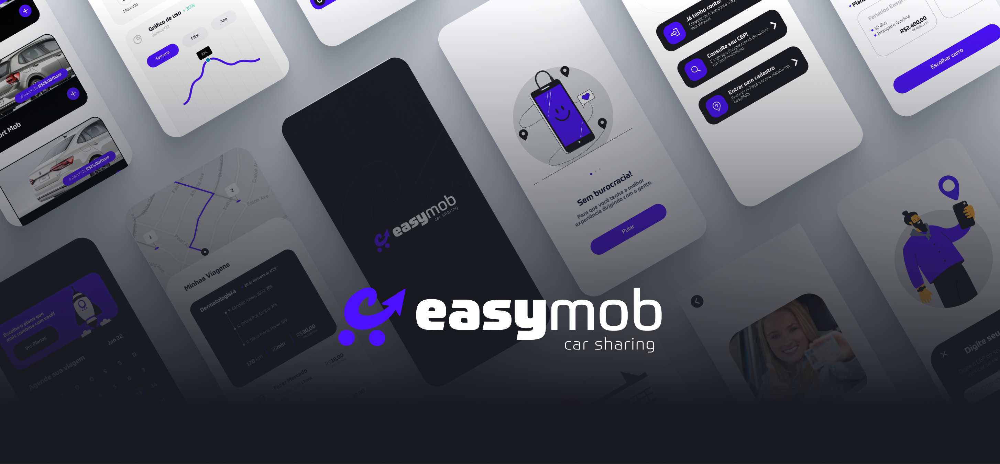

CASO — MOBILIDADE / CARSHARING · 2022

EasyMob
Projeto em equipe (com Guilherme Bruni e Luisa Vilaça), desenvolvido durante o curso UX Unicórnio: uma solução de carsharing para moradores de condomínios residenciais, endereçando o incômodo de manter um carro próprio sem abrir mão de mobilidade quando necessário.
Conduzimos desk research, duas pesquisas quantitativas (mais de 100 respostas somadas) e entrevistas qualitativas com 6 potenciais usuários para validar hipóteses. A partir disso, construímos duas personas, mapas de jornada, benchmark com concorrentes diretos e indiretos, e priorizamos soluções com a técnica Como Poderíamos (How Might We).
Testamos o fluxo inicial de consulta e cadastro no Maze antes de avançar para a interface de alta fidelidade — o teste revelou pontos de fricção reais, como baixa visibilidade da opção de consulta de condomínio e uma taxa de rejeição de quase 29% em uma das tarefas, o que orientou os ajustes seguintes no fluxo.